Pinch to zoom · turn your phone for a bigger view
A desktop task and project management platform built around an empathetic, user-centred, and universal design approach — with a clear rationale for why that combination matters here. Executive functioning and time management are areas where traditional productivity software may not optimally support neurodiverse users. By grounding every design decision in genuine user understanding from the outset, Flow aims to address that gap: not as a niche solution, but as a more thoughtful product that works better for everyone.
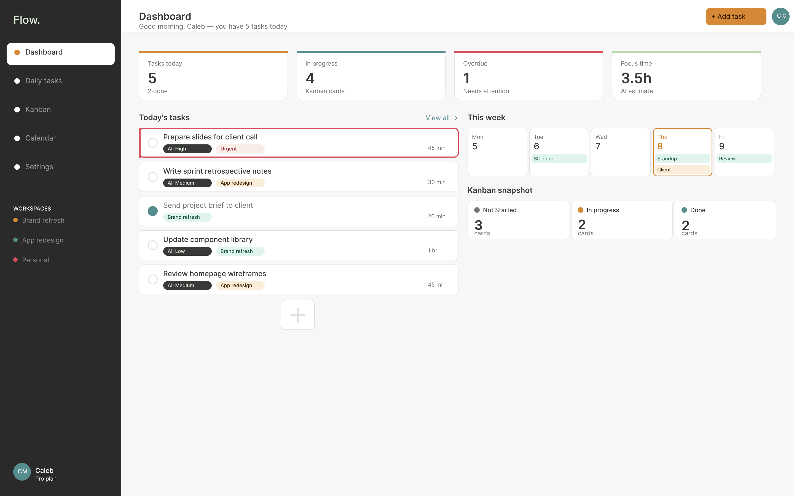
Task management tools are built for neurotypical users — and it shows. For people with ADHD and other neurodiverse profiles, the typical approach of long flat lists, unclear priority, cognitive overload in UI, and no contextual awareness creates more anxiety than it resolves. The tools designed to help become another source of friction.
This isn't a niche problem. Research estimates that about 15% to 20% of UK adults are neurodivergent (McDowall et al., Acas, 2025), yet many established productivity tools are shaped by legacy models of organisation, attention and task management that do not always reflect the diverse ways people think and work.
Flow takes a more inclusive approach. Its design principle is simple: designing around the needs of neurodivergent users doesn't have to compromise the experience for neurotypical users. Instead, features that support flexibility, clarity and reduced cognitive load can create a better experience for everyone.
The design challenge: How do we build a task and project management tool that reduces cognitive load, surfaces what matters most, and adapts to how neurodiverse users actually think — without creating a "special needs" product that feels othering?
Flow followed the Stanford d.school Design Thinking process. I ran eight semi-structured interviews, supported by a survey of 17 people, a literature review and a competitor analysis. Recruitment language focused on lived experience of organisational challenges rather than asking people to disclose a diagnosis, which kept the study inclusive and meant the group included people with and without ADHD. In the survey, 8 of the 17 respondents either identified with ADHD or reported similar challenges without a diagnosis, and 7 said they struggle to manage their time or tasks often or very often.
Every participant relied on a patchwork of notes apps, inboxes, calendars, paper lists and spreadsheets. No one had found a tool that unified them. In the survey, to-do lists and digital calendars were the most used tools, each by 14 of 17 respondents, yet they sit in separate places, and the gap between short-term task lists and longer-term calendars was a recurring pain point.
Design response: tasks live in one place and surface across the dashboard, daily list, Kanban board and calendar.
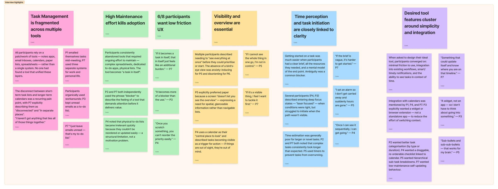
Participants consistently abandoned tools that needed ongoing effort to maintain. Two of them independently used the word “blocker” for a tool that demands attention before it delivers value.
Design response: calendar integration so nothing is entered twice, and onboarding that introduces one concept at a time.
“If it becomes a task in itself, that in itself just feels like an additional burden.”
Participant 7
“It becomes more of a blocker than the use.”
Participant 3
Several participants needed to “see everything at once” before they could prioritise or start. Without a bird’s-eye view they felt anxious or disoriented, and anything out of sight was out of mind.
Design response: a dashboard and Kanban board for the wider view, alongside a simple daily list for the immediate one.
“If I cannot see the whole thing in one go, I’m not in control.”
Participant 5
“If it’s a visible thing, I feel I want to tackle it first.”
Participant 7
Getting started was much easier with a clear brief and a visible path. Ambiguity was a common blocker, and estimates for larger or unfamiliar tasks were generally poor: complex tasks consistently took longer than expected.
Design response: an AI-estimated duration on every task, and AI priority ordering so the first step is never a decision.
“If the brief is vague, it’s harder to get started.”
Participant 7
“Once I can see it sequentially, I can get going.”
Participant 4
Affinity mapping and thematic analysis turned the research into a persona, a journey map and a set of questions to design against.
Morgan, “the scattered planner”, is 32, a father of two who works flexible hours from home. He prioritises by urgency or whatever is most visible, skim-reads notifications so only the first few words register, and has tried to-do lists that got lost or abandoned.
What he needs: to see the whole picture at a glance, know what to expect from a task, and carry less of the mental load of remembering what is next.
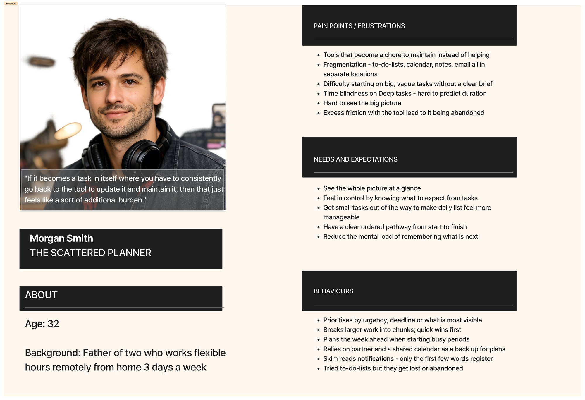
The journey map follows nine stages. The emotional low is task prioritisation, where Morgan feels overwhelmed. The stage that mattered most to the design is re-engagement after distraction, where shame and avoidance usually end the relationship with a tool.
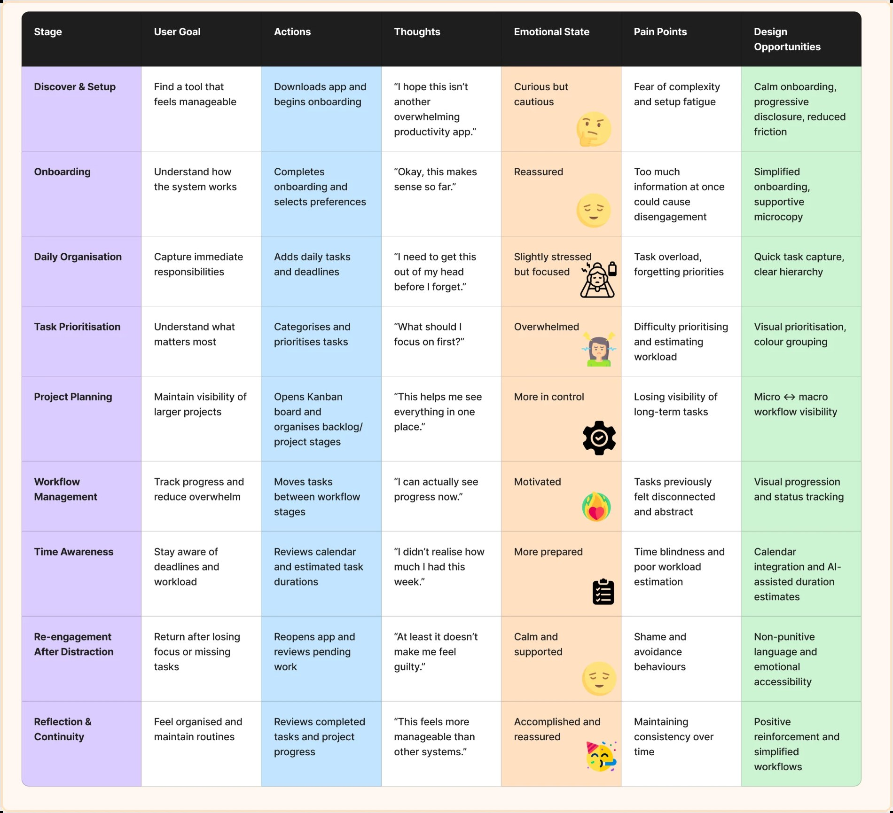
| Identified challenge | Design response |
|---|---|
| Cognitive overload | Reduced visual density and progressive onboarding |
| Task ambiguity | Clear categorisation and workflow grouping |
| Time blindness | Visible deadlines and temporal awareness tools |
| Notification fatigue | Adjustable notification preferences |
| Executive dysfunction | Structured workflows and reduced friction |
| Emotional overwhelm | Supportive microcopy and non-punitive language |
Four participants joined a co-design workshop. They responded to written problem scenarios and the How Might We questions, sketched ideas in a Crazy 8s exercise, then used dot voting to pick the ideas that were best received.
Design response: the ideas that won votes were the ones taken forward for development in the designs that followed.
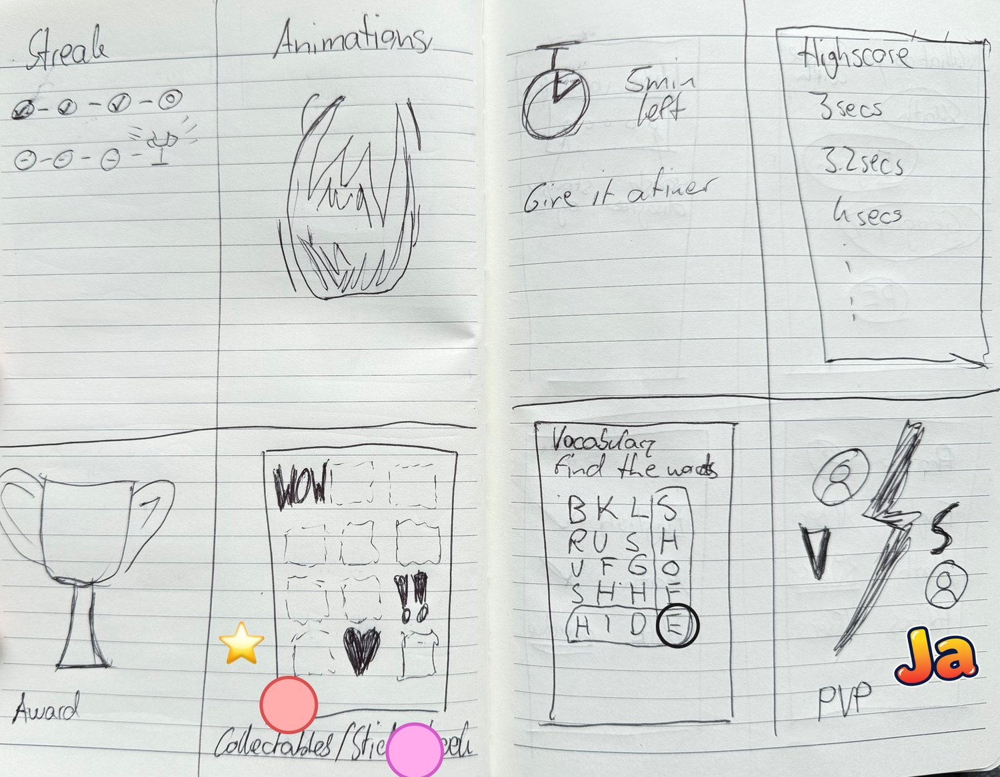
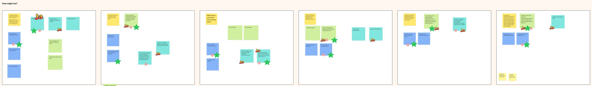
Flow began as a mobile-first idea. As the feature set grew to include project workflows, a Kanban board and calendar integration, it became clear that squeezing them into a phone screen would increase density and cognitive load, the opposite of the aim. I moved to a desktop workspace, where there is room for spacing, grouping and seeing short-term and long-term work together.
Flow is rooted in principles drawn from my decade of professional work with neurodiverse individuals — conducting needs assessments, delivering software training, and observing first-hand where tools fail people with ADHD, dyslexia, and related profiles. The research wasn't solely academic; it was lived and professional.
The guiding principle throughout was that accessibility isn't a bolt-on. Features designed to help ND users — AI-ordered priority, time estimates on every task, a calm visual hierarchy, minimal interruption — are features that benefit all users. Flow was designed with the most demanding users in mind so that everyone else is automatically served.
The dashboard gives a single, calm overview of the day — tasks today, Kanban status, a weekly calendar strip, and an AI-estimated focus time. Nothing is hidden and nothing is buried. The AI priority badge on each task removes the cognitive overhead of deciding what matters.
The task creation modal is deliberately simple: title, description, priority, workspace, due date, and an AI-generated time estimate. A single toggle sends the task to the Kanban board simultaneously. The AI estimate removes one of the most common ADHD failure points — misjudging how long things take.
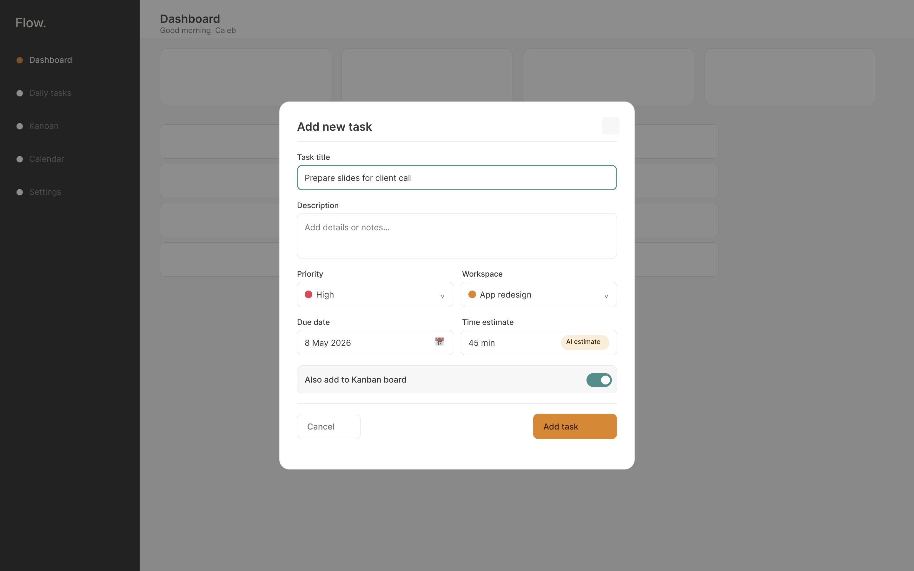
The daily tasks view strips away everything except today's list. The AI re-ordering banner is shown once at the top — informing the user that priority has been adjusted — with an option to reorder manually if they disagree. Tasks are sorted by AI priority, with time estimates visible at a glance.
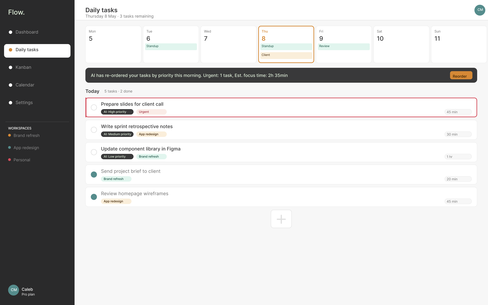
The Kanban board provides a longer-horizon view of project work, filterable by workspace. Cards show priority, assignee, and due date at a glance. The board works alongside the daily task list rather than replacing it — users who prefer visual project tracking have it; those who prefer a simple list aren't forced onto the board.
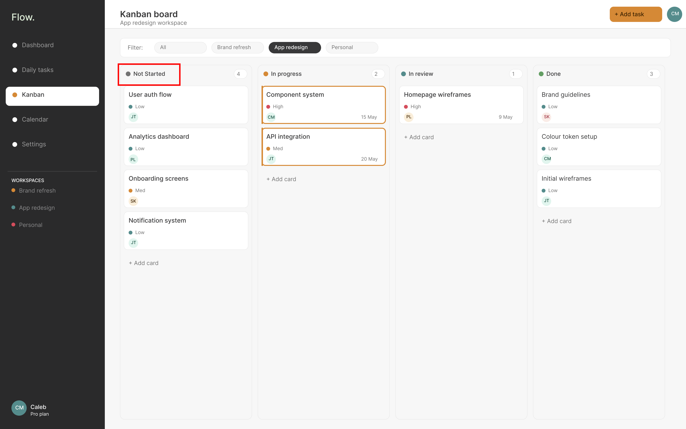
Moving a card between columns uses a clear drag state with a "Drop here" target zone — reducing the uncertainty of where a card will land, which was a consistent pain point observed in research with ND users using competing tools.
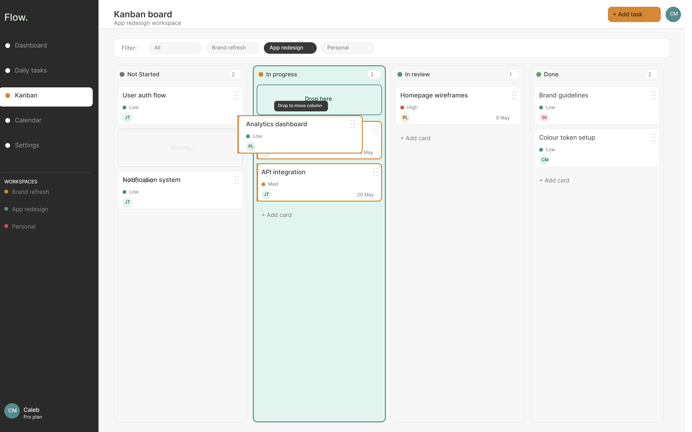
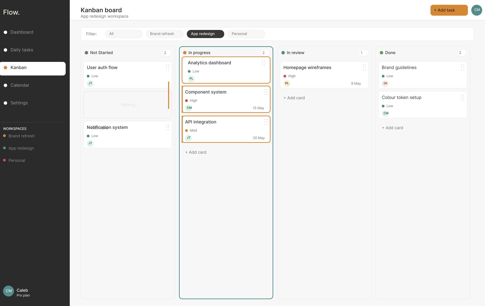
The calendar integrates with Google Calendar, surfacing external commitments alongside Flow tasks in a single weekly view. Colour-coding by workspace makes it immediately clear which domain each event belongs to. This removes the need to switch between a calendar app and a task tool — a common source of lost context for ND users.
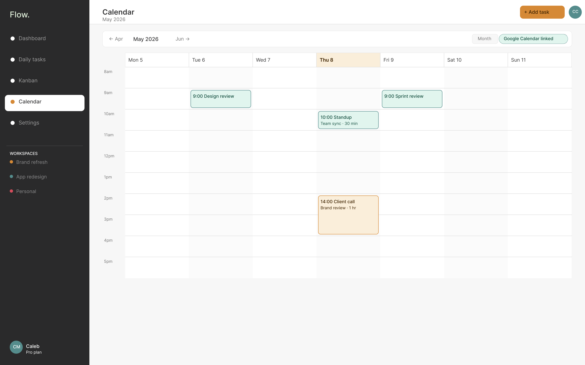
Notification preferences are offered in three profiles — Detailed, Balanced, and Minimalist — so users can match the tool's behaviour to their own tolerance for interruption. Integrations with Google Calendar, Outlook, and Slack are available. The decision to surface three named notification modes rather than a wall of toggles was a direct response to research showing that granular settings create paralysis for ND users.
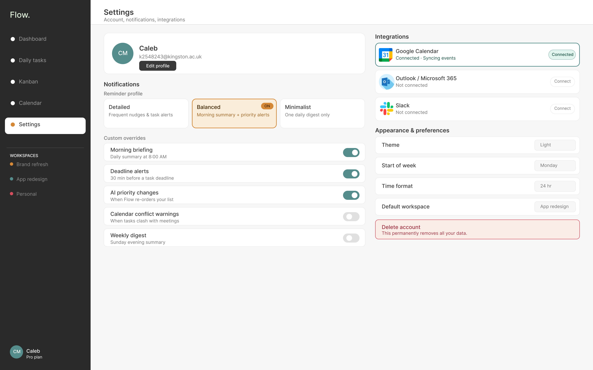
I used AI tools sparingly on Flow. Every component was constructed manually in Figma, and the design decisions were my own.
Once usability testing had identified the issues, I used Figma Make to iterate rapidly on the changes at the mid- and hi-fi stages. It shortened the distance between a fix and something I could look at and judge. I then rebuilt the components and wired them into the final design by hand.
Using AI this way didn't replace design thinking. Every idea it helped me visualise was interrogated against the ND-first design principles before it stayed in the product.
I tested low-fidelity and mid-fidelity prototypes, with five participants in each round. Because the research linked disorganisation with stress, shame and overwhelm, the mid-fi round measured how the product felt as well as whether it worked.
Participants described the experience as “clear”, “calm” and “less overwhelming” than traditional productivity tools.
| Category | Area | Average | Interpretation |
|---|---|---|---|
| Novelty | Onboarding experience | 3.0 / 5 | Seen as familiar and easy to understand rather than highly innovative. |
| Novelty | Task management workflow | 4.0 / 5 | Kanban integration, structured organisation and workflow visibility felt more innovative than existing tools. |
| Usefulness | Onboarding experience | 5.0 / 5 | Onboarding clearly communicated the app’s purpose and functionality. |
| Usefulness | Task management workflow | 5.0 / 5 | Daily tasks and Kanban were seen as highly useful for organisation, prioritisation and workload management. |
| Feasibility | Onboarding experience | 5.0 / 5 | Realistic, manageable and easy to complete in everyday use. |
| Feasibility | Task management workflow | 4.2 / 5 | Practical for regular use, although some terminology and workflow relationships needed clarifying. |
Novelty scored lowest and usefulness highest. Flow’s strength is not a radically new interaction, but bringing familiar ones together in a way that is accessible and emotionally considerate.
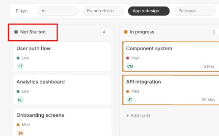
The project demonstrated that inclusive design principles and a polished, professional product are not in tension — they reinforce each other.
Flow is the project that most directly connects my professional background to my UX practice. The design decisions aren't hypothetical — they're grounded in a decade of observing what actually goes wrong when ND users interact with software that wasn't built for them.
Using AI tooling sparingly also clarified where it belongs in my process: it is useful for visualising and iterating quickly, while the decisions and the construction stay with me.
Testing so far involved a mixed group, because recruitment focused on lived experience rather than diagnosis. The most valuable next step would be testing with a group of ADHD users specifically — to validate whether the AI priority ordering reduces or increases anxiety, and whether the three-profile notification system lands as intended or still feels like too many choices.
The project also taught me something about discipline. Once the design moved to desktop, I spent too long refining visuals at mid-fidelity, when the goal of that stage was to test clarity and function. I now match a prototype’s polish to what the next test needs to answer.